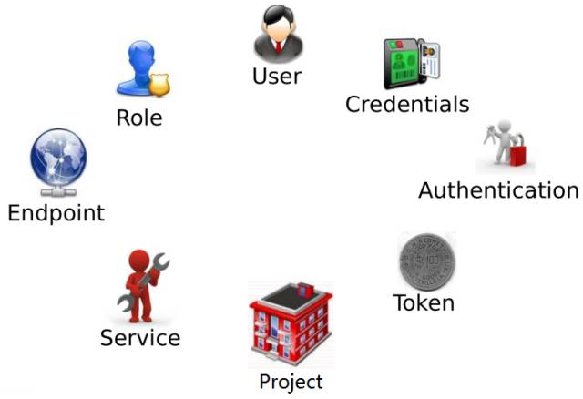
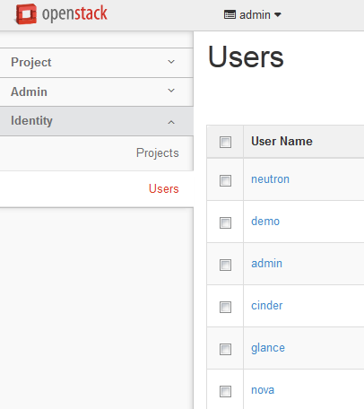
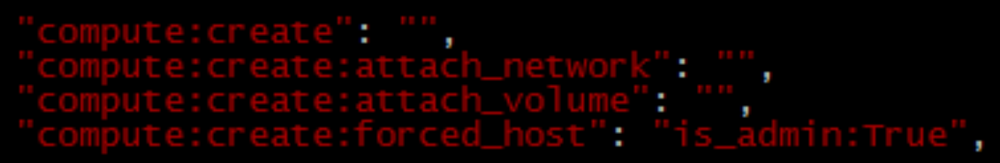

第一篇keystone— 身份认证服务
一、Keystone介绍：
keystone 是OpenStack的组件之一，用于为OpenStack家族中的其它组件成员提供统一的认证服务，包括身份验证、令牌的发放和校验、服务列表、用户权限的定义等等。云环境中所有的服务之间的授权和认证都需要经过 keystone. 因此 keystone 是云平台中第一个即需要安装的服务。
作为 OpenStack 的基础支持服务，Keystone 做下面这几件事情：
- 管理用户及其权限
- 维护 OpenStack Services 的 Endpoint
- Authentication（认证）和 Authorization（鉴权）
学习 Keystone，得理解下面这些概念：

User
User 指代任何使用 OpenStack 的实体，可以是真正的用户，其他系统或者服务。

当 User 请求访问 OpenStack 时，Keystone 会对其进行验证。Horizon 在 Identity->Users 管理 User

除了 admin 和 demo，OpenStack 也为 nova、cinder、glance、neutron 服务创建了相应的 User。 admin 也可以管理这些 User。

Credentials
Credentials 是 User 用来证明自己身份的信息，可以是：
1. 用户名/密码
2. Token
3. API Key
4. 其他高级方式

Authentication
Authentication 是 Keystone 验证 User 身份的过程。User 访问 OpenStack 时向 Keystone 提交用户名和密码形式的 Credentials，Keystone 验证通过后会给 User 签发一个 Token 作为后续访问的 Credential。

Token
Token 是由数字和字母组成的字符串，User 成功 Authentication 后 Keystone 生成 Token 并分配给 User。
- Token 用做访问 Service 的 Credential
- Service 会通过 Keystone 验证 Token 的有效性
- Token 的有效期默认是 24 小时

Project
Project 用于将 OpenStack 的资源（计算、存储和网络）进行分组和隔离。
根据 OpenStack 服务的对象不同，Project 可以是一个客户（公有云，也叫租户）、部门或者项目组（私有云）。
这里请注意：
- 资源的所有权是属于 Project 的，而不是 User。
- 在 OpenStack 的界面和文档中，Tenant / Project / Account 这几个术语是通用的，但长期看会倾向使用 Project
- 每个 User（包括 admin）必须挂在 Project 里才能访问该 Project 的资源。 一个User可以属于多个 Project。
- admin 相当于 root 用户，具有最高权限

Horizon 在 Identity->Projects 中管理 Project

通过 Manage Members 将 User 添加到 Project


Service
OpenStack 的 Service 包括 Compute (Nova)、Block Storage (Cinder)、Object Storage (Swift)、Image Service (Glance) 、Networking Service (Neutron) 等。每个 Service 都会提供若干个 Endpoint，User 通过 Endpoint 访问资源和执行操作。

Endpoint
Endpoint 是一个网络上可访问的地址，通常是一个 URL。Service 通过 Endpoint 暴露自己的 API。 Keystone 负责管理和维护每个 Service 的 Endpoint。

可以使用下面的命令来查看 Endpoint。
# source devstack/openrc admin admin# openstack catalog list

Role
安全包含两部分：Authentication（认证）和 Authorization（鉴权）
Authentication 解决的是“你是谁？”的问题
Authorization 解决的是“你能干什么？”的问题
Keystone 借助 Role 实现 Authorization：
- Keystone定义Role

- 可以为 User 分配一个或多个 Role，Horizon 的菜单为：Identity->Project->ManageMembers

- Service 决定每个 Role 能做什么事情 Service 通过各自的 policy.json 文件对 Role 进行访问控制。 下面是 Nova 服务 /etc/nova/policy.json 中的示例：

上面配置的含义是：对于 create、attach_network 和 attach_volume 操作，任何Role的 User 都可以执行； 但只有 admin 这个 Role 的 User 才能执行 forced_host 操作。
OpenStack 默认配置只区分 admin 和非 admin Role。 如果需要对特定的 Role 进行授权，可以修改 policy.json。
二、Keystone基本架构：

•Token： 用来生成和管理token
•Catalog：用来存储和管理service/endpoint
•Identity：用来管理tenant/user/role和验证
•Policy：用来管理访问权限
三、通过例子认识Keystone：
我们通过“查询可用 image”这个实际操作让大家对这些概念建立更加感性的认识。User admin 要查看 Project 中的 image
第 1 步 登录

当点击 时，OpenStack 内部发生了哪些事情？请看下面
时，OpenStack 内部发生了哪些事情？请看下面
时，OpenStack 内部发生了哪些事情？请看下面
Token 中包含了 User 的 Role 信息
第 2 步 显示操作界面

请注意，顶部显示 admin 可访问的 Project 为 “admin” 和 “demo”。 其实在此之前发生了一些事情：

同时，admin 可以访问 Intance, Volume, Image 等服务

这是因为 admin 已经从 Keystone 拿到了各 Service 的 Endpoints

第 3 步 显示 image 列表
点击 “Images”，会显示 image 列表

背后发生了这些事：
首先 admin 将请求发送到 Glance 的 Endpoint

Glance 向 Keystone 询问 admin 身份是否有效

接下来 Glance 会查看 /etc/glance/policy.json 判断 admin 是否有查看 image 的权限

权限判定通过，Glance 将 image 列表发给 admin。
Troubleshoot
OpenStack 排查问题的方法主要是通过日志。
每个 Service 都有自己的日志文件。
Keystone 主要有两个日志： keystone.log 和 keystone_access.log，保存在 /var/log/apache2/ 目录里。
devstack 的 screen 窗口已经帮我们打开了这两个日志。 可以直接查看：

如果需要得到最详细的日志信息，可以在 /etc/keystone/keystone.conf 中打开 debug 选项

在非 devstack 安装中，日志可能在 /var/log/keystone/ 目录里。Keystone 就到这里！